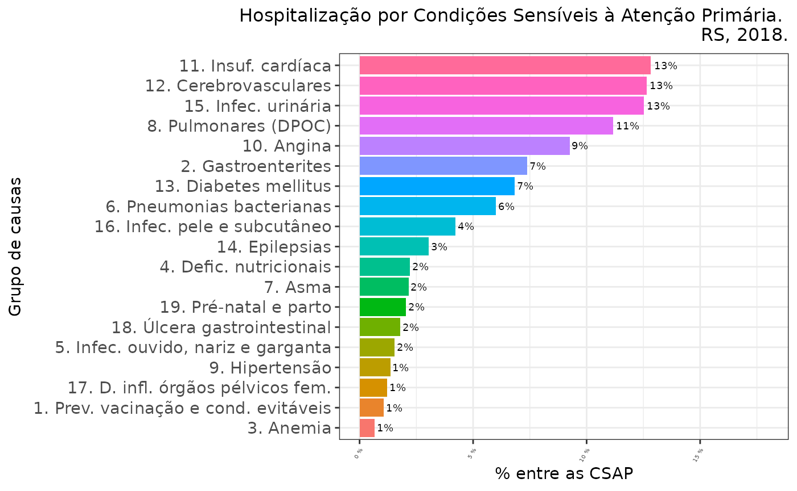
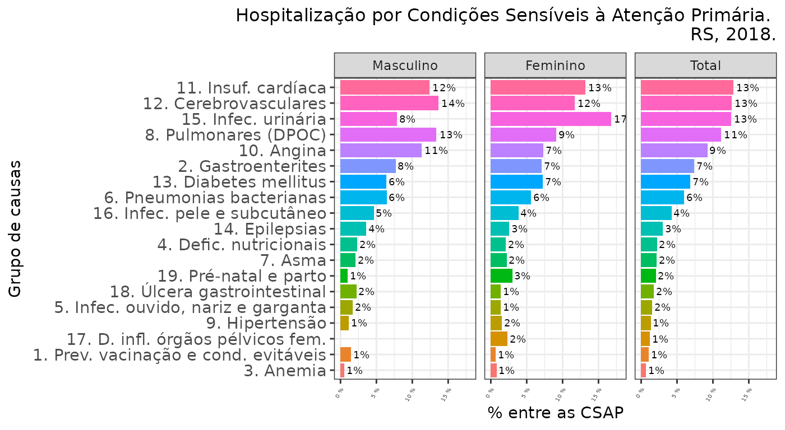
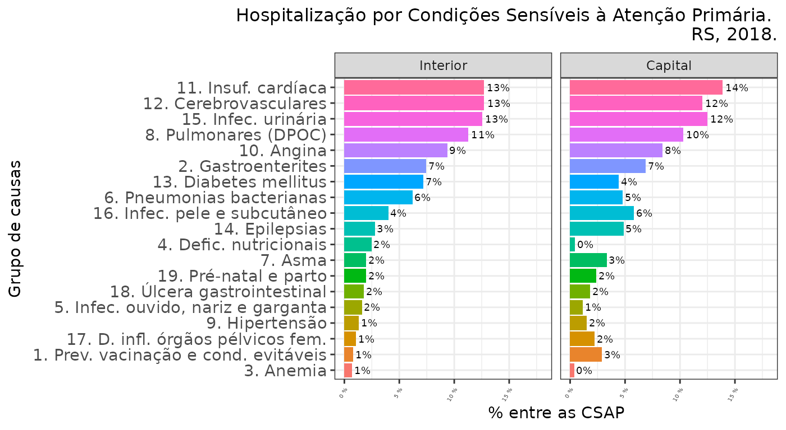

Exemplos de uso
Em
atualização
17 de February de 2025
Source: vignettes/articles/exemplos.Rmd
exemplos.RmdClassificação da causa (código CID-10)
Em arquivos de dados
É possível classificar as CSAP diretamente a partir de arquivos com
extensão .DBC, .DBF, ou .CSV, sem necessidade da leitura prévia dos
dados. Para outras extensões de arquivo é necessária a prévia importação
dos dados para um objeto de classe data.frame.
Arquivos do DATASUS
Através de seu site FTP, o DATASUS disponibiliza dados de diferentes Sistemas de Informação em Saúde do SUS, em arquivos comprimidos de extensão DBC. Os arquivos podem ser baixados na página de transferência de arquivos do DATASUS e expandidos para DBF ou CSV (entre várias outras possibilidades de manejo) pelo TabWin, disponível na mesma página. Graças ao pacote read.dbc, de Daniela Petruzalek, também podemos ler os arquivos comprimidos do DATASUS no R, e graças ao pacote microdatasus, de Raphael Saldanha [@Saldanha2019], podemos ler com facilidade esses arquivos na internet, sem necessidade de download.
O código abaixo cria um banco com as informações das AIHs do “ano de competência” 2021 ocorridas no RS e outro com as informações das Declarações de Óbito (DO) de residentes no RS ocorridas em 2021:
# remotes::install_github("rfsaldanha/microdatasus") # desnecessário se o pacote estiver instalado
AIHRS2021 <- microdatasus::fetch_datasus(year_start = 2021, 1, 2021, 12, uf = "RS",
information_system = "SIH-RD")
nrow(AIHRS2021) # linhas
[1] 709893
ncol(AIHRS2021) # colunas
[1] 113
DORS2021 <- microdatasus::fetch_datasus(year_start = 2021, year_end = 2021, uf = "RS",
information_system = "SIM-DO")
nrow(DORS2021)
[1] 117722
ncol(DORS2021)
[1] 87Se o arquivo de dados estiver armazenado no computador, basta digitar, entre aspas, o nome do arquivo — com o “path” se o arquivo estiver em diretório diferente daquele da sessão de trabalho ativa (neste exemplo, num sub-diretório do diretório de trabalho da sessão ativa, chamado ‘data-raw’).
csap.dbc <- csapAIH("../../data-raw/RDRS1801.dbc")
Importados 60.529 registros.
Excluídos 8.240 (13,6%) registros de procedimentos obstétricos.
Excluídos 366 (0,6%) registros de AIH de longa permanência.
Exportados 51.923 (85,8%) registros.
csap.dbf <- csapAIH("../../data-raw/RDRS1801.dbf")
Importados 60.529 registros.
Excluídos 8.240 (13,6%) registros de procedimentos obstétricos.
Excluídos 366 (0,6%) registros de AIH de longa permanência.
Exportados 51.923 (85,8%) registros.- No caso de arquivos CSV é mandatório indicar o tipo de separador de
campos, com o argumento
sep.
csap.csv <- csapAIH("../../data-raw/RDRS1801.csv", sep = ",")
Importados 60.529 registros.
Excluídos 8.240 (13,6%) registros de procedimentos obstétricos.
Excluídos 366 (0,6%) registros de AIH de longa permanência.
Exportados 51.923 (85,8%) registros.A função fetchcsap foi pensada para apresentar um
extrato dos registros por período de internação e não de “competência”
da AIH, que é commo se organizam os arquivos de dados. Assim, precisamos
modificar alguns argumentos para ter os mesmos registros:
csap.ftp <- fetchcsap('RS', 2018, mesfim = 1, anofim = 2018, periodo = "competencia")
[36mℹ
[39m Your local Internet connection seems to be ok.
[36mℹ
[39m DataSUS FTP server seems to be up and reachable.
[36mℹ
[39m Starting download...
Importados 60.529 registros.
Excluídos 8.240 (13,6%) registros de procedimentos obstétricos.
Excluídos 366 (0,6%) registros de AIH de longa permanência.
Exportados 51.923 (85,8%) registros.Os extratos são iguais:
all.equal(attributes(csap.dbc)$resumo, attributes(csap.dbf)$resumo)
[1] TRUE
all.equal(attributes(csap.dbc)$resumo, attributes(csap.csv)$resumo)
[1] TRUE
all.equal(attributes(csap.ftp)$resumo, attributes(csap.dbc)$resumo)
[1] TRUEMas em estudos epidemiológicos geralmente nos interessa delimitar a população pela data de internação, o que exige trabalho posterior à leitura do arquivo “RD”, pois o arquivo de um determinado mês e ano de “competência” pode conter registros de internações ocorridas em outro momento. Vemos abaixo que a data de internação nos objetos criados anteriormente (a partir de “RDRS1801.dbc”) varia de 01Aug2017 a 31Oct2017. Além disso, o arquivo pode não conter o registro de todas as internações ocorridas naquele mês.
Por isso fetchcsap tem seus argumentos de forma a
devolver o banco de dados apenas com os registros do período de
interesse. Veja a seguir o resultado com as internações não-obstétricas
para jan2018 segundo a seleção dos registros:
a. todos daquele mês de competência (mesmo comando anterior para a
construção de csap.ftp”); b. apenas as internações ocorridas no mesmo
mês de competência da AIH; e c. apenas as internações ocorridas em
jan2018 e registradas nos arquivos “RD” dos meses de competência janeiro
a fevereiro de 20018.
a <- fetchcsap('RS', 2018, mesfim = 1, anofim = 2018, periodo = "c")
[36mℹ
[39m Your local Internet connection seems to be ok.
[36mℹ
[39m DataSUS FTP server seems to be up and reachable.
[36mℹ
[39m Starting download...
Importados 60.529 registros.
Excluídos 8.240 (13,6%) registros de procedimentos obstétricos.
Excluídos 366 (0,6%) registros de AIH de longa permanência.
Exportados 51.923 (85,8%) registros.
nrow(a)
[1] 51923
summary(a$data.inter)
Min. 1st Qu. Median Mean 3rd Qu. Max.
"2017-06-06" "2017-12-08" "2017-12-28" "2017-12-20" "2018-01-10" "2018-01-31"
b <- fetchcsap('RS', 2018, mesfim = 1, anofim = 2018)
[36mℹ
[39m Your local Internet connection seems to be ok.
[36mℹ
[39m DataSUS FTP server seems to be up and reachable.
[36mℹ
[39m Starting download...
Importados 29.086 registros.
Excluídos 5.005 (17,2%) registros de procedimentos obstétricos.
Excluídos NA (NA%) registros de AIH de longa permanência.
Exportados 24.081 (82,8%) registros.
nrow(b)
[1] 24081
summary(b$data.inter)
Min. 1st Qu. Median Mean 3rd Qu. Max.
"2018-01-01" "2018-01-05" "2018-01-11" "2018-01-12" "2018-01-18" "2018-01-31"
c <- fetchcsap('RS', 2018, mesfim = 2, anofim = 2018)
[36mℹ
[39m Your local Internet connection seems to be ok.
[36mℹ
[39m DataSUS FTP server seems to be up and reachable.
[36mℹ
[39m Starting download...
Importados 75.818 registros.
Excluídos 12.363 (16,3%) registros de procedimentos obstétricos.
Excluídos 164 (0,2%) registros de AIH de longa permanência.
Exportados 63.291 (83,5%) registros.
nrow(c)
[1] 63291
summary(c$data.inter)
Min. 1st Qu. Median Mean 3rd Qu. Max.
"2018-01-01" "2018-01-11" "2018-01-23" "2018-01-24" "2018-02-05" "2018-02-28"
# Limpar o ambiente de trabalho, renomear um dos bancos de dados:
csap <- csap.ftp
rm(csap.csv, csap.dbc, csap.dbf, csap.ftp)Em um banco de dados existente na sessão de trabalho
Com a estrutura dos arquivos da AIH
read.csv("../../data-raw/RDRS1801.csv") |> # criar o data.frame
csapAIH() |>
glimpse()
Importados 60.529 registros.
Excluídos 5.044 (8,3%) registros de procedimentos obstétricos.
Excluídos 366 (0,6%) registros de AIH de longa permanência.
Exportados 55.119 (91,1%) registros.
Rows: 55,119
Columns: 16
$ n.aih
[3m
[38;5;246m<chr>
[39m
[23m "4318100063695", "4318100349508", "4318100349563", "4318100…
$ munres
[3m
[38;5;246m<int>
[39m
[23m 431340, 430450, 430450, 430450, 430450, 430450, 430450, 430…
$ munint
[3m
[38;5;246m<int>
[39m
[23m 431080, 430450, 430450, 430450, 430450, 430450, 430450, 430…
$ sexo
[3m
[38;5;246m<fct>
[39m
[23m masc, fem, fem, fem, masc, masc, masc, masc, fem, masc, fem…
$ nasc
[3m
[38;5;246m<date>
[39m
[23m 55633-04-16, 56511-08-19, 56537-12-10, 56292-01-04, 55005-…
$ idade
[3m
[38;5;246m<dbl>
[39m
[23m 58, 25, 24, 33, 80, 69, 50, 58, 70, 69, 88, 61, 26, 42, 67,…
$ fxetar.det
[3m
[38;5;246m<fct>
[39m
[23m 55-59, 25-29, 20-24, 30-34, 80 e +, 65-69, 50-54, 55-59, 70…
$ fxetar5
[3m
[38;5;246m<fct>
[39m
[23m 55-59, 25-29, 20-24, 30-34, 80 e +, 65-69, 50-54, 55-59, 70…
$ csap
[3m
[38;5;246m<chr>
[39m
[23m "não", "não", "não", "não", "sim", "sim", "não", "não", "si…
$ grupo
[3m
[38;5;246m<fct>
[39m
[23m no-CSAP, no-CSAP, no-CSAP, no-CSAP, g12, g03, no-CSAP, no-C…
$ cid
[3m
[38;5;246m<chr>
[39m
[23m "K439", "O628", "O641", "O623", "I64", "D500", "I408", "T63…
$ proc.rea
[3m
[38;5;246m<int>
[39m
[23m 407040064, 411010034, 411010034, 303100044, 303040149, 3030…
$ data.inter
[3m
[38;5;246m<date>
[39m
[23m 57221-04-11, 57221-03-29, 57221-04-08, 57221-04-08, 57221-…
$ data.saida
[3m
[38;5;246m<date>
[39m
[23m 57221-04-13, 57221-03-31, 57221-04-10, 57221-04-09, 57221-…
$ cep
[3m
[38;5;246m<int>
[39m
[23m 93544360, 96600000, 96600000, 96600000, 96600000, 96600000,…
$ cnes
[3m
[38;5;246m<int>
[39m
[23m 2232189, 2232928, 2232928, 2232928, 2232928, 2232928, 22329…Sem o padrão dos arquivos da AIH
Mude o argumento sihsus para FALSE e
indique no argumento cid qual variável contém os códigos
diagnósticos. As variáveis csap e grupo (se
csapAIH(..., grupos = TRUE, ...)) são acrescentadas ao
final do banco de dados alvo da função.
A Encuesta de Egresos Hospitalarios do Equador.
data("eeh20") # Amostra da "Encuesta de egresos hospitalarios" do Equador, ano 2020
names(eeh20) # Os nomes das variáveis
[1] "prov_ubi" "cant_ubi" "parr_ubi" "area_ubi" "clase"
[6] "tipo" "entidad" "sector" "mes_inv" "nac_pac"
[11] "cod_pais" "nom_pais" "sexo" "cod_edad" "edad"
[16] "etnia" "prov_res" "area_res" "anio_ingr" "mes_ingr"
[21] "dia_ingr" "fecha_ingr" "anio_egr" "mes_egr" "dia_egr"
[26] "fecha_egr" "dia_estad" "con_egrpa" "esp_egrpa" "cau_cie10"
[31] "cant_res" "parr_res" "causa3" "cap221rx" "cau221rx"
[36] "cau298rx" A variável cau_cie10 (posição 30) tem o código do
diagnóstico de internação. A função csapAIH acrescenta à base duas (se
grupo == TRUE) variáveis, csap e
grupo, dispostas nas últimas colunas (posição e
respectivamente.)
csap.eeh20 <- csapAIH(eeh20, sihsus = FALSE, cid = cau_cie10)
Importados 1.000 registros.
Excluídos 150 registros de parto (15% do total).
names(csap.eeh20)
[1] "prov_ubi" "cant_ubi" "parr_ubi" "area_ubi" "clase"
[6] "tipo" "entidad" "sector" "mes_inv" "nac_pac"
[11] "cod_pais" "nom_pais" "sexo" "cod_edad" "edad"
[16] "etnia" "prov_res" "area_res" "anio_ingr" "mes_ingr"
[21] "dia_ingr" "fecha_ingr" "anio_egr" "mes_egr" "dia_egr"
[26] "fecha_egr" "dia_estad" "con_egrpa" "esp_egrpa" "cau_cie10"
[31] "cant_res" "parr_res" "causa3" "cap221rx" "cau221rx"
[36] "cau298rx" "csap" "grupo"
csap.eeh20[c(30,37:38)] |>
head(3)
cau_cie10 csap grupo
1 C169 não no-CSAP
2 U072 não no-CSAP
3 A090 sim g02A Declaração de Óbito (DO) do SIM
A variável CAUSABAS tem o código da causa básica do
óbito.
De modo semelhante à AIH, as bases de dados da DO também têm a idade
codificada e não a verdadeira idade da pessoa. Por exemplo, a variável
IDADE em DORS2021 é um factor com
0 níveis, em que o primeiro é e o último é . Neste caso podemos usar a
função idadeSUS para computar a idade, mas como o resultado
de idadeSUS é “um objeto da classe data frame com três
variáveis” (v. ?idadeSUS), necessitamos a função
unnest (de tidyr) para desagrupar as variáveis
antes de inseri-las em DORS2021. Além disso, foi excluída
(com unnest(...)[-2]) a “faixa etária detalhada”, que é a
segunda variável no output de idadeSUS.
DORS2021 <- DORS2021 %>%
csapAIH(sihsus = FALSE, cid = CAUSABAS, parto.rm = FALSE) %>%
mutate(tidyr::unnest(idadeSUS(DORS2021, sis = "SIM"), cols = c())[-2],
fxetar3 = fxetar3g(idade),
SEXO = factor(SEXO, levels = c(1,2), labels = c("masc", "fem")))
Importados 117.722 registros.
DORS2021[1:3, (ncol(DORS2021)-5):ncol(DORS2021)]
CONTADOR csap grupo idade fxetar5 fxetar3
1 1 não no-CSAP 49 45-49 15-59
2 2 não no-CSAP 41 40-44 15-59
3 3 não no-CSAP 78 75-79 60e+A partir de uma variável com códigos da CID-10:
cids <- aih100$DIAG_PRINC[1:10]
cids
[1] N189 O689 S423 H938 P584 I200 I442 C189 C409 K818
3254 Levels: A009 A020 A044 A045 A048 A049 A050 A058 A059 A061 A069 A071 ... Z990
csapAIH(cids)
Excluídos 0 registros de parto (0% do total).
cid csap grupo
1 N189 não no-CSAP
2 O689 não no-CSAP
3 S423 não no-CSAP
4 H938 não no-CSAP
5 P584 não no-CSAP
6 I200 sim g10
7 I442 não no-CSAP
8 C189 não no-CSAP
9 C409 não no-CSAP
10 K818 não no-CSAPApresentação de resultados
Resumo de importação de dados
Um resumo de importação, apresentado durante a realização do
trabalho, é guardado como atributo do banco de dados e pode ser
recuperado com as funções attr() ou
attributes():
attr(csap, "resumo")
acao freq perc objeto
1 Importados 60529 100.0 registros.
2 Excluídos \t 8240 13.6 registros de procedimentos obstétricos.
3 Excluídos \t 366 0.6 registros de AIH de longa permanência.
4 Exportados 51923 85.8 registros.
# attributes(csap)$resumoEm tabela para apresentação:
attributes(csap)$resumo |>
knitr::kable(format.args = c(big.mark = ".", decimal.mark = ","),
col.names = c("Ação", "N", "%", "Objeto") ) |>
suppressWarnings()| Ação | N | % | Objeto |
|---|---|---|---|
| Importados | 60.529 | 100,0 | registros. |
| Excluídos | 8.240 | 13,6 | registros de procedimentos obstétricos. |
| Excluídos | 366 | 0,6 | registros de AIH de longa permanência. |
| Exportados | 51.923 | 85,8 | registros. |
Tabela “bruta”
A função descreveCSAP gera, a partir de um comando muito
simples, uma tabela pronta para apresentação, com as frequências brutas
e absolutas das CSAP por grupo de causa.
descreveCSAP(csap)
Grupo Casos %Total %CSAP
1 1. Prev. vacinação e cond. evitáveis 116 0,22 1,07
2 2. Gastroenterites 802 1,54 7,38
3 3. Anemia 73 0,14 0,67
4 4. Defic. nutricionais 241 0,46 2,22
5 5. Infec. ouvido, nariz e garganta 168 0,32 1,55
6 6. Pneumonias bacterianas 653 1,26 6,01
7 7. Asma 234 0,45 2,15
8 8. Pulmonares (DPOC) 1.213 2,34 11,17
9 9. Hipertensão 147 0,28 1,35
10 10. Angina 1.005 1,94 9,25
11 11. Insuf. cardíaca 1.394 2,68 12,83
12 12. Cerebrovasculares 1.373 2,64 12,64
13 13. Diabetes mellitus 743 1,43 6,84
14 14. Epilepsias 331 0,64 3,05
15 15. Infec. urinária 1.360 2,62 12,52
16 16. Infec. pele e subcutâneo 459 0,88 4,23
17 17. D. infl. órgãos pélvicos fem. 133 0,26 1,22
18 18. Úlcera gastrointestinal 195 0,38 1,80
19 19. Pré-natal e parto 222 0,43 2,04
20 Total CSAP 10.862 20,92 100
21 no-CSAP 41.061 79,08 --
22 Total de internações 51.923 100 --Tabela para apresentação
descreveCSAP(csap) |>
knitr::kable(align = c('l', rep('r', 3)))| Grupo | Casos | %Total | %CSAP |
|---|---|---|---|
| 1. Prev. vacinação e cond. evitáveis | 116 | 0,22 | 1,07 |
| 2. Gastroenterites | 802 | 1,54 | 7,38 |
| 3. Anemia | 73 | 0,14 | 0,67 |
| 4. Defic. nutricionais | 241 | 0,46 | 2,22 |
| 5. Infec. ouvido, nariz e garganta | 168 | 0,32 | 1,55 |
| 6. Pneumonias bacterianas | 653 | 1,26 | 6,01 |
| 7. Asma | 234 | 0,45 | 2,15 |
| 8. Pulmonares (DPOC) | 1.213 | 2,34 | 11,17 |
| 9. Hipertensão | 147 | 0,28 | 1,35 |
| 10. Angina | 1.005 | 1,94 | 9,25 |
| 11. Insuf. cardíaca | 1.394 | 2,68 | 12,83 |
| 12. Cerebrovasculares | 1.373 | 2,64 | 12,64 |
| 13. Diabetes mellitus | 743 | 1,43 | 6,84 |
| 14. Epilepsias | 331 | 0,64 | 3,05 |
| 15. Infec. urinária | 1.360 | 2,62 | 12,52 |
| 16. Infec. pele e subcutâneo | 459 | 0,88 | 4,23 |
| 17. D. infl. órgãos pélvicos fem. | 133 | 0,26 | 1,22 |
| 18. Úlcera gastrointestinal | 195 | 0,38 | 1,80 |
| 19. Pré-natal e parto | 222 | 0,43 | 2,04 |
| Total CSAP | 10.862 | 20,92 | 100 |
| no-CSAP | 41.061 | 79,08 | – |
| Total de internações | 51.923 | 100 | – |
Entretanto, ao transformar os valores para o formato latino, sua
classe se transforma em character e assim é impossível
realizar cálculos com esse output. Além disso, não serve para
publicações em inglês. Por isso a função descreveCSAP
permanecerá no pacote mas seu desenvolvimento seguirá em outra função,
agora de nome tabCSAP. Nessa nova função, a apresentação de
uma tabela formatada se faz a partir do argumento
format = TRUE. Por padrão esse argumento é
FALSE, o que permite operações matemáticas com os valores
da tabela (um data.frame, na verdade), como veremos em
seguida.
A função tabCSAP permite também a apresentação da tabela
em inglês ou espanhol, através do argumento lang:
tabCSAP(csap$grupo, digits = 1, lang = "en", format = T) |>
knitr::kable(align = c('l', rep('r', 3)))| Group | Cases | Total % | ACSC % |
|---|---|---|---|
| 1. Vaccine prev. and amenable cond. | 116 | 0.2 | 1.1 |
| 2. Gastroenteritis | 802 | 1.5 | 7.4 |
| 3. Anemia | 73 | 0.1 | 0.7 |
| 4. Nutritional deficiency | 241 | 0.5 | 2.2 |
| 5. Ear, nose and throat infec. | 168 | 0.3 | 1.5 |
| 6. Bacterial pneumonia | 653 | 1.3 | 6.0 |
| 7. Asthma | 234 | 0.5 | 2.2 |
| 8. Pulmonary (COPD) | 1,213 | 2.3 | 11.2 |
| 9. Hypertension | 147 | 0.3 | 1.4 |
| 10. Angina | 1,005 | 1.9 | 9.3 |
| 11. Heart failure | 1,394 | 2.7 | 12.8 |
| 12. Cerebrovascular | 1,373 | 2.6 | 12.6 |
| 13. Diabetes mellitus | 743 | 1.4 | 6.8 |
| 14. Convulsions and epilepsy | 331 | 0.6 | 3.0 |
| 15. Urinary infection | 1,360 | 2.6 | 12.5 |
| 16. Skin and subcutaneous infec. | 459 | 0.9 | 4.2 |
| 17. Pelvic inflammatory disease | 133 | 0.3 | 1.2 |
| 18. Gastrointestinal ulcers | 195 | 0.4 | 1.8 |
| 19. Pre-natal and childbirth | 222 | 0.4 | 2.0 |
| ACSC | 10,862 | 20.9 | 100 |
| Non ACSC | 41,061 | 79.1 | – |
| TOTAL hospitalizations | 51,923 | 100 | – |
tabCSAP(csap$grupo, digits = 1, lang = "es", format = T) |>
knitr::kable(align = c('l', rep('r', 3)))| Grupo | Casos | % Total | % CSAP |
|---|---|---|---|
| 1. Prev. vacunación y otros medios | 116 | 0,2 | 1,1 |
| 2. Gastroenteritis | 802 | 1,5 | 7,4 |
| 3. Anemia | 73 | 0,1 | 0,7 |
| 4. Def. nutricionales | 241 | 0,5 | 2,2 |
| 5. Infec. oído, nariz y garganta | 168 | 0,3 | 1,5 |
| 6. Neumonía bacteriana | 653 | 1,3 | 6,0 |
| 7. Asma | 234 | 0,5 | 2,2 |
| 8. Enf. vías respiratorias inferiores | 1.213 | 2,3 | 11,2 |
| 9. Hipertensión | 147 | 0,3 | 1,4 |
| 10. Angina de pecho | 1.005 | 1,9 | 9,3 |
| 11. Insuf. cardíaca congestiva | 1.394 | 2,7 | 12,8 |
| 12. Enf. cerebrovasculares | 1.373 | 2,6 | 12,6 |
| 13. Diabetes mellitus | 743 | 1,4 | 6,8 |
| 14. Epilepsias | 331 | 0,6 | 3,0 |
| 15. Infección urinaria | 1.360 | 2,6 | 12,5 |
| 16. Infec. piel y subcutáneo | 459 | 0,9 | 4,2 |
| 17. Enf infl órganos pélvicos femeninos | 133 | 0,3 | 1,2 |
| 18. Úlcera gastrointestinal | 195 | 0,4 | 1,8 |
| 19. Enf. del embarazo, parto y puerperio | 222 | 0,4 | 2,0 |
| Total CSAP | 10.862 | 20,9 | 100 |
| No-CSAP | 41.061 | 79,1 | – |
| Total de ingresos | 51.923 | 100 | – |
Finalmente, vimos que a função
tabCSAP permite ainda a apresentação da lista em 20 grupos
de causa. Assim, se as CSAP foram classificadas em 20 grupos – usando,
por exemplo o argumento lista = "Alfradique" em
csapAIH() –, essa tabela deve ser apresentada com
tabCSAP e não com descreveCSAP. Note ainda
que, à diferença de descreveCSAP, tabCSAP
exige o nome da variável com o grupo de causas.
listaOPS <- csapAIH(AIHRS2021, lista = "Alfradique")
Importados 709.893 registros.
Excluídos 88.345 (12,4%) registros de procedimentos obstétricos.
Excluídos 4.121 (0,6%) registros de AIH de longa permanência.
Exportados 617.427 (87%) registros.
# descreveCSAP(listaOPS) # Retorna o erro: "O vetor precisa ter os 19 grupos da Lista Brasileira.
# Se essa for a lista 'Alfradique' use 'tabCSAP'.""
tabCSAP(listaOPS$grupo)
grupo casos perctot percsap
1 1. Prev. por vacinação 127 0.02 0.13
2 2. Outras cond. evitáveis 1316 0.21 1.31
3 3. Gastroenterites 4205 0.68 4.20
4 4. Anemia 695 0.11 0.69
5 5. Defic. nutricionais 1765 0.29 1.76
6 6. Infec. ouvido, nariz e garganta 954 0.15 0.95
7 7. Pneumonias bacterianas 5425 0.88 5.41
8 8. Asma 3443 0.56 3.44
9 9. Pulmonares (DPOC) 11389 1.84 11.36
10 10. Hipertensão 1247 0.20 1.24
11 11. Angina 8421 1.36 8.40
12 12. Insuf. cardíaca 14119 2.29 14.09
13 13. Cerebrovasculares 16426 2.66 16.39
14 14. Diabetes mellitus 6784 1.10 6.77
15 15. Epilepsias 3293 0.53 3.29
16 16. Infec. urinária 11092 1.80 11.07
17 17. Infec. pele e subcutâneo 3852 0.62 3.84
18 18. D. infl. órgãos pélvicos fem. 1154 0.19 1.15
19 19. Úlcera gastrointestinal 2261 0.37 2.26
20 20. Pré-natal e parto 2260 0.37 2.25
21 Total CSAP 100228 16.23 100.00
22 No-CSAP 517199 83.77 NA
23 Total de internações 617427 100.00 NACalcular taxas
Exemplo: cálculo das taxas brutas de ICSAP por grupo de causa em Cerro Largo, RS, 2021:
O código IBGE (os seis primeiros dígitos) de Cerro Largo é “430520”.
As ICSAP
Selecionamos as informações sobre residentes de Cerro Largo em nosso banco de dados da AIH em 2021.
A população
Desde que o DATASUS interrompeu a publicação dos arquivos com as estimativas populacionais por sexo e faixa etária para os municípios brasileiros (último arquivo no FTP é da população em 2012), passou a ser necessária a tabulação no TABNET e posterior leitura dos dados no programa de análise. Em 2022 Raphael Saldanha dispôs-se ao trabalho de fazer as muitas tabulações necessárias e nos brindou outro excelente e muito esperado pacote preenchendo essa lacuna: brpop, com as as estimativas da população por sexo e faixa etária para os municípios brasileiros, de 2000 a 2021 (Nota técnica).
Entretanto, as tabelas no pacote brpop têm o total (a soma
da população nas diferentes faixas etárias), e os rótulos das faixas
etárias são longos e estão em inglês, por isso resolvi criar outra
função (popbr2000_2021) que retornasse a população com os
rótulos em português e apenas com a população estimada em cada faixa
etária (sem o total). Assim, a população estimada para Cerro Largo em
2021 foi capturada com o seguinte comando,
clpop <- csapAIH::popbr2000_2021(2021, munic = "430520")
[1m
[22mSetting `max_tries = 2`.
[1m
[22mSetting `max_tries = 2`.Com o pacote brpop, teríamos de acrescentar o filtro de exclusão da categoria “Total” na faixa etária e os resultados seriam os mesmos, porém com outra estrutura do objeto e outros rótulos de categorias:
clpop %>%
group_by(fxetar5, sexo) %>%
summarise(pop = sum(pop)) %>%
tidyr::pivot_wider(names_from = sexo, values_from = pop)
[1m
[22m`summarise()` has grouped output by 'fxetar5'. You can override using the
`.groups` argument.
[38;5;246m# A tibble: 17 × 3
[39m
[38;5;246m# Groups: fxetar5 [17]
[39m
fxetar5 masc fem
[3m
[38;5;246m<fct>
[39m
[23m
[3m
[38;5;246m<int>
[39m
[23m
[3m
[38;5;246m<int>
[39m
[23m
[38;5;250m 1
[39m 0-4 390 372
[38;5;250m 2
[39m 5-9 408 393
[38;5;250m 3
[39m 10-14 417 344
[38;5;250m 4
[39m 15-19 434 370
[38;5;250m 5
[39m 20-24 493 431
[38;5;250m 6
[39m 25-29 552 503
[38;5;250m 7
[39m 30-34 603 517
[38;5;250m 8
[39m 35-39 572 500
[38;5;250m 9
[39m 40-44 512 450
[38;5;250m10
[39m 45-49 461 430
[38;5;250m11
[39m 50-54 463 499
[38;5;250m12
[39m 55-59 529 486
[38;5;250m13
[39m 60-64 453 440
[38;5;250m14
[39m 65-69 348 383
[38;5;250m15
[39m 70-74 243 308
[38;5;250m16
[39m 75-79 167 219
[38;5;250m17
[39m 80 e + 192 361
brpop::mun_sex_pop() %>%
filter(code_muni == "430520", year == 2021, age_group != "Total") %>%
group_by(age_group, sex) %>%
summarise(pop = sum(pop)) %>%
tidyr::pivot_wider(names_from = sex, values_from = pop)
[1m
[22m`summarise()` has grouped output by 'age_group'. You can override using the
`.groups` argument.
[38;5;246m# A tibble: 17 × 3
[39m
[38;5;246m# Groups: age_group [17]
[39m
age_group Female Male
[3m
[38;5;246m<chr>
[39m
[23m
[3m
[38;5;246m<int>
[39m
[23m
[3m
[38;5;246m<int>
[39m
[23m
[38;5;250m 1
[39m From 0 to 4 years 372 390
[38;5;250m 2
[39m From 10 to 14 years 344 417
[38;5;250m 3
[39m From 15 to 19 years 370 434
[38;5;250m 4
[39m From 20 to 24 years 431 493
[38;5;250m 5
[39m From 25 to 29 years 503 552
[38;5;250m 6
[39m From 30 to 34 years 517 603
[38;5;250m 7
[39m From 35 to 39 years 500 572
[38;5;250m 8
[39m From 40 to 44 years 450 512
[38;5;250m 9
[39m From 45 to 49 years 430 461
[38;5;250m10
[39m From 5 to 9 years 393 408
[38;5;250m11
[39m From 50 to 54 years 499 463
[38;5;250m12
[39m From 55 to 59 years 486 529
[38;5;250m13
[39m From 60 to 64 years 440 453
[38;5;250m14
[39m From 65 to 69 years 383 348
[38;5;250m15
[39m From 70 to 74 years 308 243
[38;5;250m16
[39m From 75 to 79 years 219 167
[38;5;250m17
[39m From 80 years or more 361 192A tabela com as taxas
tabCSAP(claih$grupo) %>%
mutate(taxa = casos / sum(clpop$pop)*10000) %>%
knitr::kable(format.args = list(decimal.mark = ",", big.mark = "."), digits = 1,
caption = paste("ICSAP em Cerro Largo, RS, 2021. Taxas por", 10.000, "hab."
))| grupo | casos | perctot | percsap | taxa |
|---|---|---|---|---|
| 1. Prev. vacinação e cond. evitáveis | 2 | 0,3 | 1,9 | 1,4 |
| 2. Gastroenterites | 6 | 0,8 | 5,6 | 4,2 |
| 3. Anemia | 0 | 0,0 | 0,0 | 0,0 |
| 4. Defic. nutricionais | 0 | 0,0 | 0,0 | 0,0 |
| 5. Infec. ouvido, nariz e garganta | 2 | 0,3 | 1,9 | 1,4 |
| 6. Pneumonias bacterianas | 20 | 2,8 | 18,5 | 14,0 |
| 7. Asma | 1 | 0,1 | 0,9 | 0,7 |
| 8. Pulmonares (DPOC) | 13 | 1,8 | 12,0 | 9,1 |
| 9. Hipertensão | 1 | 0,1 | 0,9 | 0,7 |
| 10. Angina | 3 | 0,4 | 2,8 | 2,1 |
| 11. Insuf. cardíaca | 13 | 1,8 | 12,0 | 9,1 |
| 12. Cerebrovasculares | 7 | 1,0 | 6,5 | 4,9 |
| 13. Diabetes mellitus | 10 | 1,4 | 9,3 | 7,0 |
| 14. Epilepsias | 2 | 0,3 | 1,9 | 1,4 |
| 15. Infec. urinária | 24 | 3,4 | 22,2 | 16,9 |
| 16. Infec. pele e subcutâneo | 4 | 0,6 | 3,7 | 2,8 |
| 17. D. infl. órgãos pélvicos fem. | 0 | 0,0 | 0,0 | 0,0 |
| 18. Úlcera gastrointestinal | 0 | 0,0 | 0,0 | 0,0 |
| 19. Pré-natal e parto | 0 | 0,0 | 0,0 | 0,0 |
| Total CSAP | 108 | 15,3 | 100,0 | 75,8 |
| No-CSAP | 599 | 84,7 | NA | 420,6 |
| Total de internações | 707 | 100,0 | NA | 496,4 |
Gráficos
gr <- desenhaCSAP(csap, titulo = "auto", onde = "RS", quando = 2018, limsup = .18, x.size = 4)
gr
Estratificado por categorias de outra variável presente no banco de dados:
Observe que ao estratificar o gráfico mantém a ordenação por
frequência da variável em seu todo, sem a estratificação, quando o
argumento ordenar = TRUE(padrão).
rot <- ggplot2::as_labeller(c("masc" = "Masculino", "fem" = "Feminino", "(all)" = "Total"))
gr + ggplot2::facet_grid(~ sexo, margins = TRUE, labeller = rot)
gr + ggplot2::facet_wrap(~ munres == "431490",
labeller = ggplot2::as_labeller(c("FALSE" = "Interior",
"TRUE" = "Capital")))
DORS2021 %>%
filter(!is.na(SEXO), !is.na(idade)) %>%
desenhaCSAP(x.size = 7, y.size = 8) +
ggplot2::facet_grid(SEXO ~ fxetar3)Mortalidade por CSAP por grupos de causa, por sexo e faixa etária. RS, 2021.